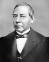

Orientador para
seleccionar la forma de estudio
Las características Honestidad, Autocrítica, Laboriosidad, Concentración y Estudio: tiene tres preguntas; donde se dan las instrucciones, se presenta el extracto de un libro y se pregunta sobre el mismo.
Por favor, analiza tu respuesta y de manera sincera contesta las preguntas.
La forma de aprendizaje sugerido. Se fundamentará en la cantidad de a's, b's y c's obtenidas. Sin embargo, podrás seleccionar la forma de estudio que más te guste.

INSTRUCCIÓN 1 Lee con detenimiento para comprender el texto, extracto
de un libro citado. Para que contestes con toda sinceridad la pregunta que se te
realiza.
EXTRACTO DEL LIBRO 1 La vida de los hombres se centraba en valores
espirituales hoy casi en desuso, como la dignidad, el desinterés, el estoicismo del
ser humano frente a la adversidad. Estos grandes valores, como la honestidad,
el honor, el gusto por las cosas bien hechas, el respeto por los demás, no eran
algo excepcional, se los hallaba en la mayorı́a de las personas. ¿De dónde se
desprendı́a su valor, su coraje ante la vida? [31, pág 42].
PREGUNTA 1 ¿Cuál serı́a tu opinión de este extracto del libro citado? Selecciona una de las opciones.
| a. | Estoy de acuerdo |
| b. | No lo creo |
| c. | Es ridı́culo |
INSTRUCCIÓN 2 Lee con detenimiento para comprender el texto, extracto
de un libro citado. Para que contestes con toda sinceridad la pregunta que se te
realiza.
EXTRACTO DEL LIBRO 2 Un mujik dejo caer su hacha en el rı́o, y, apenado, rompió a llorar. El espı́ritu de las aguas se compadeció de él, y presentándole una hacha de oro, le preguntó: -¿Es la tuya?
Respondió el mujik:
-No, no es la mı́a.
El espı́ritu de las aguas llevóle otra de plata.
-Tampoco es ésta- dijo nuevamente el mujik.
Entonces, el espı́ritu de las aguas llevóle su propia hacha.
Viéndola, el mujik exclamó:
-¡Esa es la mı́a!
Para recompensarle por su honradez, el espı́ritu de las aguas le regaló las tres
hachas [32, pág 265].
PREGUNTA 2 ¿Cuál serı́a tu opinión de este extracto del libro citado? Selecciona una de las opciones.
| a. | Hizo bien el mujik |
| b. | No hizo bien el mujik |
| c. | No se, si el mujik hizo bien |
INSTRUCCIÓN 3 Lee con detenimiento para comprender el texto, extracto
de un libro citado. Para que contestes con toda sinceridad la pregunta que se te
realiza.
EXTRACTO DEL LIBRO 3 Nos complacemos en presagiar bien de los niños,
y sentimos el flujo de necedades que casi siempre viene a desbaratar las esperanzas que quisiéramos fundar en alguna feliz ocurrencia que por casualidad les
viene a la boca. Si rara vez da el mı́o esperanzas semejantes, nunca causará este
sentimiento, porque nunca dice palabras inútiles, ni se abandona a una charla
que sabe nadie ha de escuchar. Sus ideas son limitadas, pero rectas; si nada sabe de memoria, sabe mucho por experiencia; si no lee tan bien como otro
niño en nuestros libros, lee mejor en el de la naturaleza; su entendimiento no
está en su lengua, sino en su cabeza; tiene menos memoria que discernimiento;
no sabe hablar más que un idioma, pero entiende lo que dice; y si no habla tan
bien como los demás, en cambio obra mejor [33, pág 141].
PREGUNTA 3 ¿Cuál es tu opinión del texto en negritas del párrafo
del libro citado? Selecciona una de las opciones.
| a. | Es lo mejor |
| b. | Es mejor que sepa mucho |
| c. | No estoy de acuerdo |

INSTRUCCIÓN 4 Lee con detenimiento para comprender el texto, extracto
de un libro citado. Para que contestes con toda sinceridad la pregunta que se te
realiza.
EXTRACTO DEL LIBRO 4 Y la temperancia, de la que el gran número
no conoce más que el nombre, esta virtud que consiste en no ser esclavo de sus
deseos, sino en sobreponerse a ellos y a vivir con moderación [34, pág 258] .
PREGUNTA 4 ¿Cuál es tu opinión del extracto del libro citado? Selecciona una de las opciones.
| a. | No es posible hacerlo |
| b. | No es necesario vivir con moderación |
| c. | Esto propicia la autocrı́tica |
INSTRUCCIÓN 5 Lee con detenimiento para comprender el texto, extracto
de un libro citado. Para que contestes con toda sinceridad la pregunta que se te
realiza.
EXTRACTO DEL LIBRO 5 El mexicano tiene tanto horror a las apariencias, como amor le profesan sus demagogos y dirigentes. Por eso se disimula su propio existir hasta confundirse con los objetos que lo rodean. Y ası́, por miedo a las apariencias, se vuelve sólo Apariencia. Aparenta ser otra cosa e incluso prefiere la apariencia de la muerte o del no ser antes que abrir su intimidad y cambiar. La disimulación mimética, en fin, es una de tantas manifestaciones de nuestro hermetismo. Si el gesticulador acude al disfraz, los demás queremos pasar inadvertidos. En ambos casos ocultaremos nuestro ser. Y a veces lo negamos
[35, pág 48].
PREGUNTA 5 ¿Cuál es tu opinión del extracto del libro citado? Selecciona una de las opciones.
| a. | El mexicano no es autocrı́tico |
| b. | El mexicano si es autocrı́tico |
| c. | No entiendo el texto |
INSTRUCCIÓN 6 Lee con detenimiento para comprender el texto, extracto
de un libro citado. Para que contestes con toda sinceridad la pregunta que se te
realiza.
EXTRACTO DEL LIBRO 6 Estamos hartos, asqueados de la inteligencia.
Están contados los dı́as que le restan a la inteligencia. La inteligencia es una
de las cosas de las que hay que deshacerse. Llega el dı́a de la gente de a pie, y
la gente de a pie no se distingue por ser inteligente. La gente de a pie lo que
quiere es que se hagan las cosas. Y en cuanto estén hechas las cosas, será la
gente de a pie la que decida qué será cada cosa, y también decidirá si va a estar
permitida esa inteligencia [30, pág 119].
PREGUNTA 6 ¿Cuál es tu opinión del extracto del libro citado? Selecciona una de las opciones.
| a. | El pueblo es inteligente |
| b. | El pueblo es práctico |
| c. | No es posible |

INSTRUCCIÓN 7 Lee con detenimiento para comprender el texto, extracto
de un libro citado. Para que contestes con toda sinceridad la pregunta que se te
realiza.
EXTRACTO DEL LIBRO 7 La tesis de Riemann, una de las obras ma-
temáticas más notables que hayan aparecido como tesis doctoral, fue defendida
el 16 de diciembre de 1851. En su informe sobre la tesis, Gauss describió a
Riemann como alguien que tiene: ... una originalidad gloriosamente fértil.
La plática de Riemann Über die Hypothesen welche der Geometrie zu Grunde liegen (Sobre las hipótesis que subyacen a la geometrı́a), presentada el 10 de
junio de 1854, se convirtió en un clásico de las matemáticas.
La cátedra de Gauss en Göttingen fue ocupada por Dirichlet en 1855. En
este momento hubo un intento de otorgarle a Riemann una cátedra personal,
que fue fallido. Dos años después, sin embargo, fue nombrado profesor y, en el
mismo año, 1857, fue publicada otra de sus obras maestras. El artı́culo Teorı́a
de funciones abelianas fue el resultado de trabajo realizado durante varios años
y que habı́a estado contenido en un curso impartido a tres personas en 1855-56.
Uno de los tres fue Dedekind, quien logró hacer disponible la belleza de las clases
de Riemann al publicar el material después de la temprana muerte de Riemann.
Pasó en Sicilia el invierno de 1862-63 y viajó por Italia, donde visitó a Betti
y a otros matemáticos italianos que habı́an visitado Göttingen en junio de 1863,
pero su salud pronto se deterioró y regresó a Italia. Después de pasar de agosto
de 1864 a octubre de1865 en el norte de Italia, Riemann regresó a Göttingen
para el invierno de 1865-66, luego regresó a Selasca en las márgenes del lago
Maggiore el 16 de junio de 1866: Su fuerza declinó rápidamente y él mismo
sintió que su fin estaba cerca. Pero el dı́a anterior a su muerte, sentado bajo
una higuera con su alma plena de gozo por el glorioso paisaje, trabajó en su obra
final, la cual, desafortunadamente, quedó inconclusa [39].
PREGUNTA 7 ¿Cuál es tu opinión del extracto del libro citado?
Selecciona una de las opciones.
| a. | El trabajo arduo le hizo ser muy productivo. |
| b. | El trabajo no sirve para completar los trabajos. |
| c. | Su gran inteligencia fue lo único que le hizo ser productivo. |
INSTRUCCIÓN 8 Lee con detenimiento para comprender el texto, extracto
de un libro citado. Para que contestes con toda sinceridad la pregunta que se te
realiza.
EXTRACTO DEL LIBRO 8 Noam Chomsky. Nació el 7 de diciembre de
1928 en Philadelphia. Reconocido como uno de los fundadores principales de la
gramática transformacional-generativa, un sistema del análisis lingüı́stico que
desafı́a a lingüı́stica tradicional y relacionada con la filosofı́a, la lógica, y la psi-
colingüistica. El libro Estructuras sintácticas (1957) fue considerado como una
revolución en la disciplina de la lingüı́stica.
Obras seleccionadas:
Lingüı́stica
1957 — Syntactic Structures. 1965 — Aspects of the Theory of Syntax. 1965
— Cartesian Linguistics. 1968 — Language and Mind. 1970 — Current Issues
in Linguistic Theory. 1972 — Studies in Semantics in Generative Grammar.
1975 — Reflections on Language. 1977 — Essays on Form and Interpretation.
1980 — Rules and Representations. 1981 — Lectures on Government and Binding: The Pisa Lectures. 1984 — Modular Approaches to the Study of Mind.
1986 — Barriers. 1986 - Knowledge of Language: Its Nature, Origin, and Use.
1995 — The Minimalist Program. 2012 — The Science of Language.
Polı́tica
1970 - El Gobierno en el Futuro. 1984 - La segunda guerra frı́a. 1988 - La
quinta libertad. 1987 - On Power and Ideology. 1990 - Los guardianes de la
libertad. 1992 - El miedo a la democracia. 1997 - La Aldea Global. 1997 - Lucha
de clases. 1997 - El nuevo Orden mundial (y el viejo). 2000 - Actos de agresión.
2000 - El beneficio es lo que cuenta. 2001 - Perspectivas sobre el poder. 2001
- La (Des)Educación. 2002 - La Propaganda y la opinión pública. 2003 - El
triángulo fatal. 2003 - La cultura del terrorismo. 2004 - Ilusiones de Oriente
Medio. 2004 - Piratas y emperadores. 2007 - Estados fallidos. El abuso de poder
y el ataque a la democracia. 2008 - Intervenciones. 2008 - Sobre el anarquismo.
2008 - Lı́bano, desde dentro. 2010 - Esperanzas y realidades. 2012 - Ilusionistas.
2013 - On Anarchism. 2015 - Because We Say So. 2016 - Who Rules the World?
2017 - Requiem for the American Dream: The 10 Principles of Concentration
of Wealth Power. [40].
PREGUNTA 8 ¿Cuál es tu opinión del extracto del libro citado?
Selecciona una de las opciones.
| a. | La laboriosidad de Chomsky le hizo producir muchas obras. |
| b. | La laboriosidad no fue necesaria para desarrollar las obras. |
| c. | Su talento fue lo único que le ayudó a producir muchas obras. |
INSTRUCCIÓN 9 Lee con detenimiento para comprender el texto, extracto
de un libro citado. Para que contestes con toda sinceridad la pregunta que se te
realiza.
EXTRACTO DEL LIBRO 9 Su trabajo más importante fue en hidrodinámi-
ca que consideraba las propiedades más importantes del flujo de un fluido, la presión, la densidad y la velocidad y dio su relación fundamental conocida ahora
como Principio de Bernoulli o Teorı́a Dinámica de los fluidos. En su libro también da una explicación teórica de la presión del gas en las paredes de un envase:
“A lo largo de toda corriente fluida la energı́a total por la unidad de masa es
constante, estando constituida por la suma de la presión, la energı́a cinética por
unidad de volumen y la energı́a potencial igualmente por unidad de volumen”.
También estableció la base de la teorı́a cinética de los gases. Entre los años
1725 y 1749 ganó diez premios por su trabajo en astronomı́a, gravedad, mareas,
magnetismo, corrientes del océano y el comportamiento de una embarcación en
el mar [41].
PREGUNTA 9 ¿Cuál es tu opinión del extracto del libro citado?
Selecciona una de las opciones.
| a. | La laboriosidad le sirvió para desarrollar sus ideas. |
| b. | La laboriosidad no le sirvió para desarrollar sus ideas. |
| c. | Solamente su gran inteligencia le hizo prodigo. |

INSTRUCCIÓN 10 Lee con detenimiento para comprender el texto, extracto
de un libro citado. Para que contestes con toda sinceridad la pregunta que se te
realiza.
EXTRACTO DEL LIBRO 10 Era el menor de dos hermanos. Su padre, un
hombre acaudalado de la baja nobleza, habı́a fallecido prematuramente. Su madre habı́a preguntado nada menos que a Goethe cómo debı́a educar a sus hijos.
Una pareja de hermanos, respondió este, que manifestase a las claras la diversidad de las aspiraciones humanas y, por tanto, hiciera realidad del modo más
ejemplar las ricas oportunidades de acción y de disfrute, constituı́a de hecho un
espectáculo tendente a alimentar la inteligencia de esperanza y el espı́ritu de
toda clase de reflexión. Nadie comprendió esa frase. Ni la madre, ni el administrador Kunth, un hombre enjuto de grandes orejas. Kunth anunció al fin que
creyó entender que se trataba de un experimento. Uno debı́a ser educado para
convertirse en un hombre de cultura, y el otro en un hombre de ciencia. Pero
¿cuál para qué?
Kunth meditó. Después se encogió de hombros y propuso lanzar una moneda.
Quince expertos muy bien pagados les impartı́an cursos universitarios. Al
hermano menor Quı́mica, Fı́sica, Matemáticas; al mayor Idiomas y Literatura,
y ambos griego, latı́n y filosofı́a. Doce horas al dı́a, todos los dı́as de la semana,
sin pausas y vacaciones.
El hermano menor, Alexander, era taciturno y debilucho, habı́a que animarle
a todo, sus notas eran mediocres. Si lo abandonaban a su libre albedrı́o, recorrı́a
los bosques coleccionando escarabajos y ordenándolos según pautas ideadas por
él mismo [36].
PREGUNTA 10 ¿Cuál es tu opinión del extracto del libro citado? Selecciona una de las opciones.
| a. | Alexander no se concentraba. |
| b. | Alexander debı́a concentrarse en sus estudios. |
| c. | Alexander le falta lo que decı́a Goethe. |
INSTRUCCIÓN 11 Lee con detenimiento para comprender el texto, extracto
de un libro citado. Para que contestes con toda sinceridad la pregunta que se te
realiza.
EXTRACTO DEL LIBRO 11 Gauss sacó un pañuelo muy sucio y se sonó la
nariz. Estaba convencido de que entendı́a algo mal, pero eso le parecı́a una
inversión deliberada de causa y efecto. Bartels le proporcionó otra sopa boba en
casa de Zimmermann, consejero de la corte catedrático de la Universidad de
Gotinga. Zimmermann era flaco y afable, siempre lo contempló con un temor
cortés y se lo llevó a una audiencia con el duque de Braunschweig. El duque,
un señor amable con un tic en los parpados, los esperaba en una sala adornada
de oro, en la que ardı́an tantas velas que no habı́a sombras, sólo reflejos en los
espejos del techo que hacı́an flotar sobre sus cabezas un segundo salón invertido,
valga la expresión. ¿Ası́ que ese era el pequeño genio?
Gauss hizo la reverencia que le habı́an enseñado. Sabı́a que pronto desaparecerı́an los duques. Entonces los gobernantes absolutos sólo existirı́an en los
libros, y la idea de estar en presencia de uno, inclinarse y esperar a que hiciese
valer su autoridad le parecerı́a a todo el mundo extraña y fantástica.
Calcula algo, le animó el duque.
Gauss tosió, se sentı́a acalorado y mareado. Las velas consumı́an casi todo
el aire. Miró las llamas y de repente comprendió que el catedrático Lichtenberg
no tenı́a razón y que la hipótesis del flogisto era innecesaria. Lo que ardı́a no
era una materia luminosa, sino el aire mismo. Con permiso, dijo Zimmermann,
ahı́ habı́a un malentendido. El joven no era un buen matemático. Al contrario,
ni siquiera era bueno en cálculo. Pero la matemática, como naturalmente sabı́a
Su Alteza, no tenı́a nada que ver con el arte de sumar. Hacı́a dos semanas el
muchacho, por su propia cuenta, habı́a deducido la ley de Bode de las distancias
planetarias, después habı́a descubierto dos teoremas de Euler desconocidos para
él [36].
PREGUNTA 11 ¿Cuál es tu opinión del extracto del libro citado? Selecciona una de las opciones.
| a. | Gauss se concentraba en la hipótesis. |
| b. | Gauss no se concentraba por el calor de las velas. |
| c. | Gauss se concentraba en todo. |
INSTRUCCIÓN 12 Lee con detenimiento para comprender el texto, extracto
de un libro citado. Para que contestes con toda sinceridad la pregunta que se te
realiza.
EXTRACTO DEL LIBRO 12 Es apremiante reconocer los espacios de en-
cuentro que nos quiten de ser una multitud masificada mirando aisladamente
la televisión. Lo paradójico es que a través de esa pantalla parecemos estar conectados con el mundo entero, cuando en verdad nos arranca la posibilidad de
convivir humanamente, y lo que es tan grave como esto, nos predispone a la
abulia. Irónicamente he dicho en muchas entrevistas que la televisión es el opio
del pueblo, modificando la famosa frase de Marx. Pero lo creo, uno va quedando
aletargado delante de la pantalla, y aunque no encuentre nada de lo que busca,
lo mismo se queda ahı́, incapaz de levantarse y hacer algo bueno. Nos quita las
ganas de trabajar en alguna artesanı́a, leer un libro, arreglar algo de la casa
mientras se escucha música o se matea [31, pág. 15].
PREGUNTA 12 ¿Cuál es tu opinión del extracto del libro citado? Selecciona una de las opciones.
| a. | La televisión nos quita concentración. |
| b. | La televisión nos ayuda a concentrarnos. |
| c. | Sigamos viendo televisión. |

INSTRUCCIÓN 13 Lee con detenimiento para comprender el texto, extracto
de un libro citado. Para que contestes con toda sinceridad la pregunta que se te
realiza.
EXTRACTO DEL LIBRO 13 Los Clarke recibı́an con frecuencia a invita-
dos instruidos, de manera que la mente de Newton se mantuvo bien nutrida de
alimentos intelectuales. Lo más maravilloso de todo era la enorme colección de
libros que el señor Clarke guardaba en el ático. Ahı́ estaba el refugio perfecto,
el santuario ideal, se dijo Newton con entusiasmo al sumergirse en temas que
abarcaban todo el espectro intelectual.
Libros e invitados a cenar tuvieron el saludable efecto de introducir a este
jovencito solitario en un mundo de espı́ritus que le eran semejantes: el francés
René Descartes, que ofrecı́a una teorı́a para los recurrentes colores del arco iris;
el alemán Johannes Kepler, que habı́a descubierto que los planetas se movı́an
más despacio cuanto más alejados estaban del Sol; y el holandés Christiaan
Huygens, que daba nombre de fuerza centrı́fuga al fenómeno del corro de la
patata que el joven Newton habı́a observado unos años antes [38, págs. 28-29].
PREGUNTA 13 ¿Cuál es tu opinión del extracto del libro citado?
Selecciona una de las opciones.
| a. | El estudio es bueno. |
| b. | El estudio es malo. |
| c. | El estudio no le ayudó a Newton. |
INSTRUCCIÓN 14 Lee con detenimiento para comprender el texto, extracto
de un libro citado. Para que contestes con toda sinceridad la pregunta que se te
realiza.
EXTRACTO DEL LIBRO 14 Impreso en 1684, el artı́culo de Leibniz no
provocó una respuesta inmediata, sencillamente porque muy poca gente en el
mundo podı́a comprenderlo. El autor, con su arrogancia caracterı́stica, no habı́a
hecho muchos esfuerzos para explicar su descubrimiento, se supone que porque
deseaba que la gente le creyera mucho más listo de lo que era.
Tampoco los hermanos Bernoulli fueron capaces de entender demasiado el
artı́culo de Leibniz, a pesar de sus denodados esfuerzos. Llegaron a escribir al
gran matemático rogándole que les ayudara, pero ni siquiera recibieron respuesta.
Sin desalentarse persistieron hasta que un dı́a, como por arte de magia, Jakob
entendió todo de repente. Luego, compartió su epifanı́a con Johann de modo que
pudieran explorar conjuntamente las minucias sutiles del monumental logro de
Leibniz [36, págs. 79-80].
PREGUNTA 14 ¿Cuál es tu opinión del extracto del libro citado?
Selecciona una de las opciones.
| a. | El estudio les ayudó a comprender el artı́culo de Leibniz. |
| b. | El estudio no les ayudo a comprender el artı́culo de Leibniz. |
| c. | Entendieron por arte de magia el artı́culo de Leibniz. |
INSTRUCCIÓN 15 Lee con detenimiento para comprender el texto, extracto
de un libro citado. Para que contestes con toda sinceridad la pregunta que se te
realiza.
EXTRACTO DEL LIBRO 15 Aunque el joven aprendiz se quedó sorpren-
dido del esfuerzo que suponı́a hacer un libro, se vio igualmente sorprendido al
descubrir lo difı́cil que era el hecho de leerlo. Se fue sintiendo cada vez más
frustrado y furioso ante su incapacidad de disfrutar de los esfuerzos de su trabajo, como el objeto de la construcción que descubre que no está cualificado para
asistir al colegio que ha contribuido a construir.
En consecuencia, el joven adolescente empezó a aprender por su cuenta. Fue
un proceso arduo y laborioso, pero en cuestión de meses, compensó todo lo que
habı́a dejado de aprender durante aquellos años de escuela pública [36, págs.
133-134].
PREGUNTA 15 ¿Cuál es tu opinión del extracto del libro citado?
Selecciona una de las opciones.
| a. | El estudio le facilitó aprender. |
| b. | El estudio no le sirvió para aprender. |
| c. | Su genialidad le hizo aprender. |

SUGERENCIA DE LA FORMA DE ESTUDIO
La cantidad de letras obtenidas por tus respuestas se muestrán en la tabla y te sugieren la forma de estudio.
Observar con detenimiento la tabla.